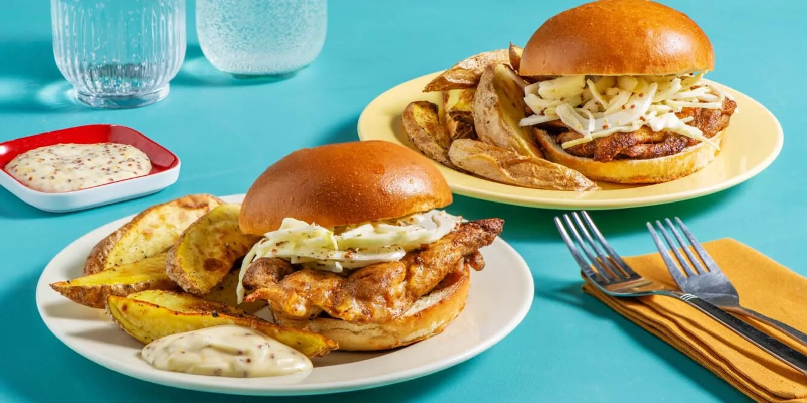

BBQ-Spiced Chicken Sandwich
Description
In this Southern-style sandwich, BBQ-spiced chicken is roasted then loaded
onto soft buns with a tangy slaw. Mustardy mayo is an irresistible dipper for
a side of crispy, golden wedges.

Ingredients
- 285 g chicken thighs
- 56 g green cabbage, shredded
- 460 g russet potato
- ½ tbsp seasoned rice vinegar
- 2 unit artisan bun
- 1 tbsp BBQ spice blend
- 55 g mayonnaise
- 1 tbsp mustard
Steps
- Preheat the oven to 450˚F. Wash and dry all produce. Remove butter from fridge to soften.
Start the recipe when the oven is ready. Cut potatoes into 1/2-inch wedges. To a parchment-lined
baking sheet, add potatoes and 1 tbsp oil. Season with salt, then toss to coat. Arrange in a single
layer. (NOTE: For 4 portions, use 2 baking sheets, with 1 tbsp oil per sheet. Roast on the lower
and middle racks of the oven, switching baking sheet positions halfway through.) Roast on the lower
rack of the oven for 25-35 min, flipping halfway through, until golden-brown and crispy.
- Meanwhile, pat chicken dry with paper towels. Season with salt, pepper and BBQ Spice Blend.
To another parchment-lined baking sheet, add chicken. Roast on the upper rack of the oven for
12-14 min, until cooked through.
- Meanwhile, in a small bowl, combine mayo and mustard. (NOTE: This is your mustard mayo.) In
a large bowl, whisk together half the vinegar (use all for 4 portions), 1 tbsp mustardy mayo
and 1/2 tsp sugar (double both for 4 portions). Add cabbage to the large bowl, season with salt
and pepper, then toss to coat. Set aside.
- When chicken is out of the oven, halve buns. Directly to the top rack of the oven, add buns,
cut-side up. Toast for 2-4 min, until golden. (TIP: Keep your eye on them so they don't burn!)
Spread 2 tsp butter (double for 4 portions) over toasted buns. Once chicken is cool enough
to handle, thinly slice.
- Stack chicken and slaw on bottom buns. Close with top buns. Plate sandwiches with wedges
and remaining mustardy mayo alongside for dipping. Enjoy!
Back
Recipe taken from Chef's Plate